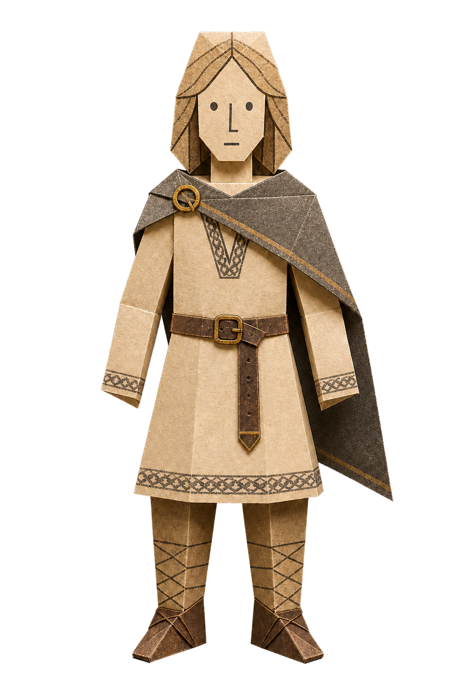
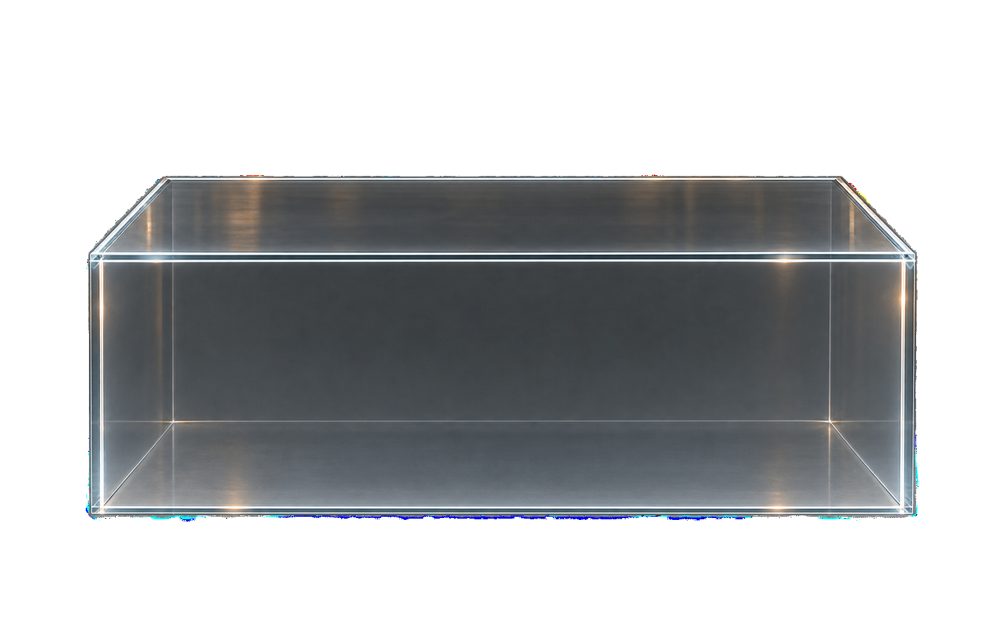

Skapa din viking
Skapa din
egen viking
Börja med bilden du redan har. Genom tio val växer en viking fram som du kan skriva ut, vika och ta med hem.
Så fungerar det

Skrolla till första valet ↓
Skapa din viking
Del 1 · Personen
Vem ser du framför dig?
Välj den person du vill följa in i vikingatiden.